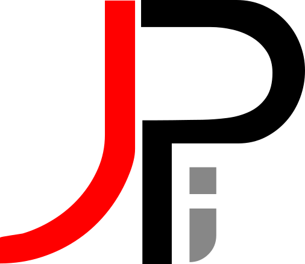
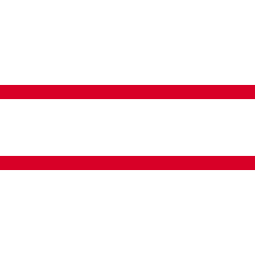
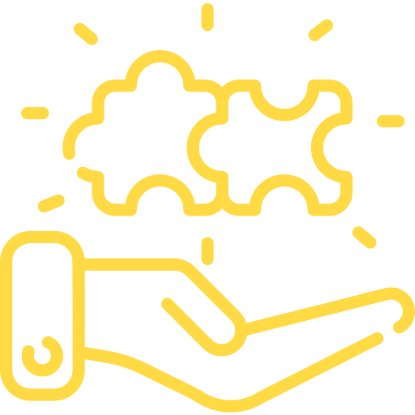
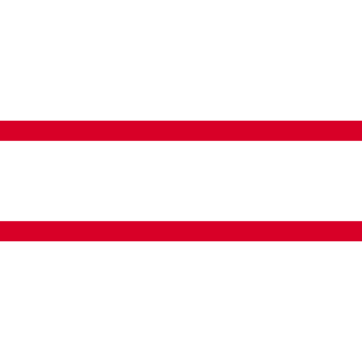
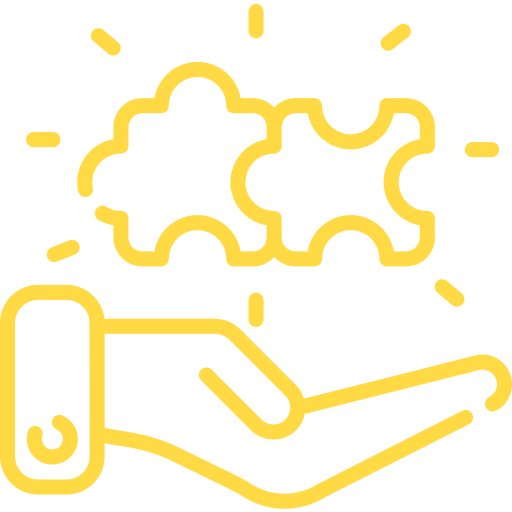

Como Programar
y no morir en el intento
Por Josue Pérez 
Twitter: @JosueChekSobre mí
Fullstack developerPHP / Laravel - Node JS - Vue.js - Electron
¿Que es la Programación?

A la elaboración de programas para la resolución de problemas mediante ordenadores;
y a la preparación de los datos necesarios para obtener una solución de un problema
 



¿Por que Programar?
1. El mundo tecnológico se encuentra en un constante desarrollo
2. Crear cosas nuevas

3. Automatizar
¿Que necesito para programar?
Algebra Basica
x = 1 + 2¿Que lenguaje utilizar?